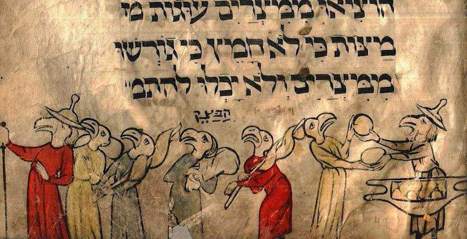
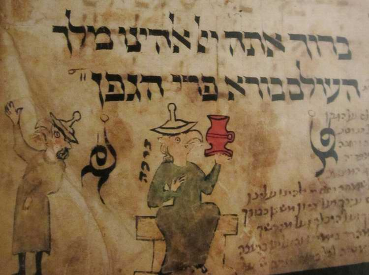

Pesach: What Did Our Fathers Bake Matzah From in the Wilderness?
One exceptional celebration of Pesach that the Torah points to took place after the departure from Egypt, in the wilderness of Sinai. And our fathers fulfilled the commandment to eat only unleavened bread. The feast itself is named after this commandment: the FEAST OF MATZOT (the Feast of Unleavened Bread). In general, during the forty years of wandering in the wilderness, as far as one can understand from the Torah, the Israelites did not circumcise their male infants, did not keep the feasts, did not offer sacrifices and did not keep the commandments of the Torah in full.
Pesach: what did our fathers bake matzah from in the wilderness? The question is by no means an idle one.

Eidl: What do you say, am I right in understanding that matzah in the wilderness was made from manna?
Menachem: I'm not sure it was made in the wilderness at all. It is a commandment that came into force in the Land.
Eidl: You mean the feasts were not kept in the wilderness?
Menachem: If they were not circumcised, they could not keep them. Pesach is not mentioned until Josh. 5:10, after the one in Egypt.
Eidl: You're right about circumcision, hmm…
Menachem: But Pesach was also kept in the second year after the Exodus. That is known: Bemidbar 9 (Num. 9:1–5). After that there is no trace.
1 וַיְדַבֵּר יְהוָה אֶל־מֹשֶׁה בְמִדְבַּר־סִינַי בַּשָּׁנָה הַשֵּׁנִית לְצֵאתָם מֵאֶרֶץ מִצְרַיִם בַּחֹדֶשׁ הָרִאשׁוֹן לֵאמֹר׃
2 וְיַעֲשׂוּ בְנֵי־יִשְׂרָאֵל אֶת־הַפָּסַח בְּמוֹעֲדוֹ׃
3 בְּאַרְבָּעָה עָשָׂר־יוֹם בַּחֹדֶשׁ הַזֶּה בֵּין הָעֲרְבַּיִם תַּעֲשׂוּ אֹתוֹ בְּמֹעֲדוֹ כְּכָל־חֻקֹּתָיו וּכְכָל־מִשְׁפָּטָיו תַּעֲשׂוּ אֹתוֹ׃
4 וַיְדַבֵּר מֹשֶׁה אֶל־בְּנֵי יִשְׂרָאֵל לַעֲשֹׂת הַפָּסַח׃
5 וַיַּעֲשׂוּ אֶת־הַפֶּסַח בָּרִאשׁוֹן בְּאַרְבָּעָה עָשָׂר יוֹם לַחֹדֶשׁ בֵּין הָעַרְבַּיִם בְּמִדְבַּר סִינָי כְּכֹל אֲשֶׁר צִוָּה יְהוָה אֶת־מֹשֶׁה כֵּן עָשׂוּ בְּנֵי יִשְׂרָאֵל׃
1 And the LORD spoke unto Moshe in the wilderness of Sinai, in the first month of the second year after they were come out of the land of Egypt, saying:
2 Let the children of Israel keep the Passover in its appointed season.
3 In the fourteenth day of this month, at dusk, ye shall keep it in its appointed season; according to all the statutes of it, and according to all the ordinances thereof, shall ye keep it.
4 And Moshe spoke unto the children of Israel, that they should keep the Passover.
5 And they kept the Passover in the first month, on the fourteenth day of the month, at dusk, in the wilderness of Sinai; according to all that the LORD commanded Moshe, so did the children of Israel.
Bemidbar (Num.) 9:1–5
The commandment to Israel to keep the Passover
Eidl: Then they had to eat matzah, didn't they?
Menachem: Yes. But they still had stores of wheat.
Eidl: Is that known? Enough bread for such a crowd?
Menachem: You don't need much for matzah…
Eidl: So you mean they kept it back especially for Pesach?
Menachem: Matzah can be baked from grain. And manna, I'm not sure it was a grain.
Eidl: But in any case it served as bread?!
Menachem: Yes. But I'm not sure matzah could be made from it.
Eidl: But it is said of it that it was prepared in different ways, including baking?
Menachem: Yes. But matzah must be made of grain. If it could leaven, unleavened bread could be made from it. That is, if so, then it is a grain.

Eidl: Yes, but it is bread from heaven!!! That is, it is kosher and completely unleavened by definition! It is a symbol of the Messiah!
Menachem: Then they ate matzah all the time. What is special about Pesach? There in Bemidbar (Num. 9:1–5) the command to eat unleavened bread is given. Why give it if there is nothing else?
Eidl: Well, yes, it was a special blessed state of the wilderness. God called our fathers into the wilderness to keep a feast. The unleavened bread, if we suppose that manna was unleavened, could well have been made of manna, and in Eretz Yisrael it was already earthly bread.
Menachem: I'm not sure. After all, bread is a grain thing. You can't make bread out of cabbage. Of course you can draw the midrash that you are drawing. But…

Eidl: Yeshua is the bread that came down from heaven. He was completely without leaven! Yeshua is without leaven. As a symbol, manna, representing what is heavenly, ought to be without leaven!
Menachem: The fathers ate that bread and died.
Eidl: Well, yes: "the word did not profit them, not being mixed with faith" (Heb. 4:2).
Menachem: As for manna, I'm not sure… In short, your midrash has a right to exist.
Author: Ephraim Kalish / Torah-Art